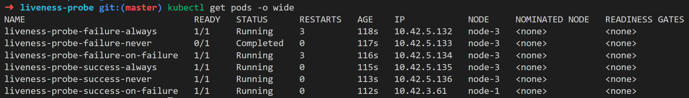
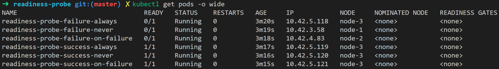
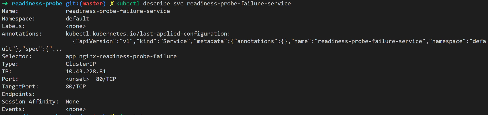
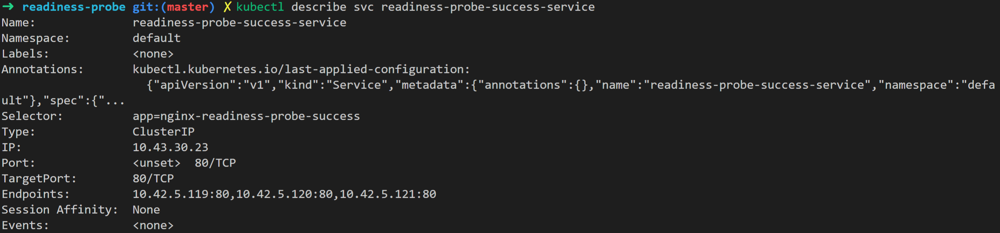

kubelet对容器执行的定期诊断。要执行诊断，kubelet需要调用由容器实现的Handler。
Handler的类型
- ExecAction: 在容器内执行指定的命令。 如果命令以状态代码0退出，则认为诊断成功。
- TCPSocketAction: 根据指定端口上容器的IP地址执行TCP检查。 如果端口打开，则认为诊断成功。
- HTTPGetAction: 针对指定端口和路径上容器的IP地址执行HTTP Get请求。如果响应的状态码大于或等于200且小于400，则认为诊断成功。
Handler的执行结果
Handler的执行结果也就是探针的执行结果，有以下三种：
- Success: 容器通过了诊断。
- Failure: 容器诊断失败。
- Unknown: 诊断失败，所以不应该采取任何行动。
Probe的类型
Probe总共有3种类型：
- livenessProbe: 指示容器是否正在运行。
- readinessProbe：指示容器是否准备为请求提供服务。
- startupProbe：指示容器内的应用程序是否已启动。
livenessProbe
指示容器是否正在运行。如果探针的执行结果为Failure，kubectl将会杀死该容器，容器会根据配置的重启策略决定是否重启该容器。如果容器没有配置该探针，则默认为Success.
如果容器在遇到问题或变得不健康时能够自行崩溃，则不需要该探针。
如果希望在探测失败时杀死容器并重新启动,则需要配置该探针，并将restartPolicy配置为Always 或OnFailure。
readinessProbe
指示容器是否准备为请求提供服务。如果探针的执行结果为Failure，则端点控制器将从与Pod匹配的所有Service的端点中删除该Pod的IP地址。初始延迟之前的默认为Failure。如果容器没有配置该探针，则默认为Success.
在下列情况下，建议使用该探针。
- 该探针执行成功后，Pod才开始接受流量。
- 在启动过程中，容器需要加载大型数据、配置文件或迁移。
- 希望容器能够自行下线进行维护
如果只是想在删除Pod时耗尽请求，则不一定需要该探针；在删除的过程中，无论是否有该探针，Pod都会自动将自己置于未就绪状态。在等待容器被停止的过程中，Pod会保持未就绪状态。
startupProbe
该探针是Kubenetes 1.16新增的探针，目前依然处于alpha阶段。
指示容器内的应用程序是否已启动。如果配置了该探针，该探针的执行结果为Success之前，其他探针都会被禁用。如果探针的执行结果为Failure，kubectl将会杀死该容器，容器会根据配置的重启策略决定是否重启该容器。如果容器没有配置该探针，则默认为Success.
如果容器的启动时间超过initialDelaySeconds + failureThreshold×periodSeconds，则需要配置该探针，该探针检查的终结点与livenessProbe一致。
示例
在不同的重启策略下，livenessProbe和readinessProbe探针执行结果为Success和Failure的示例。
所有的manifests都在 https://github.com/chengqing-su/kubernetes-learning/tree/master/container-probes。
livenessProbe

readinessProbe


